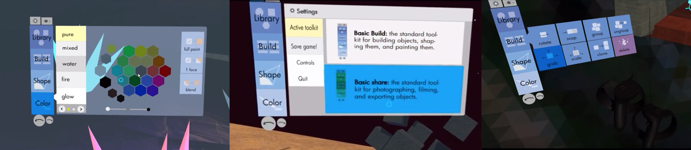
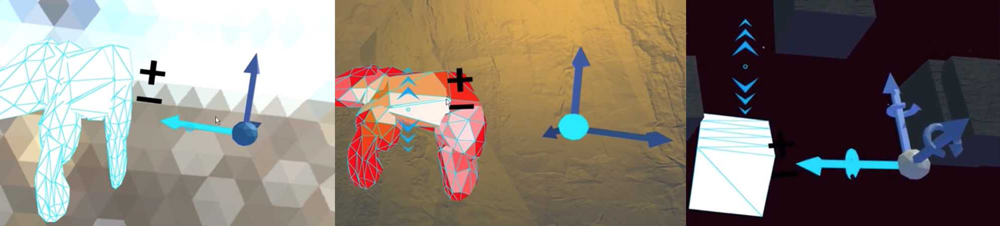
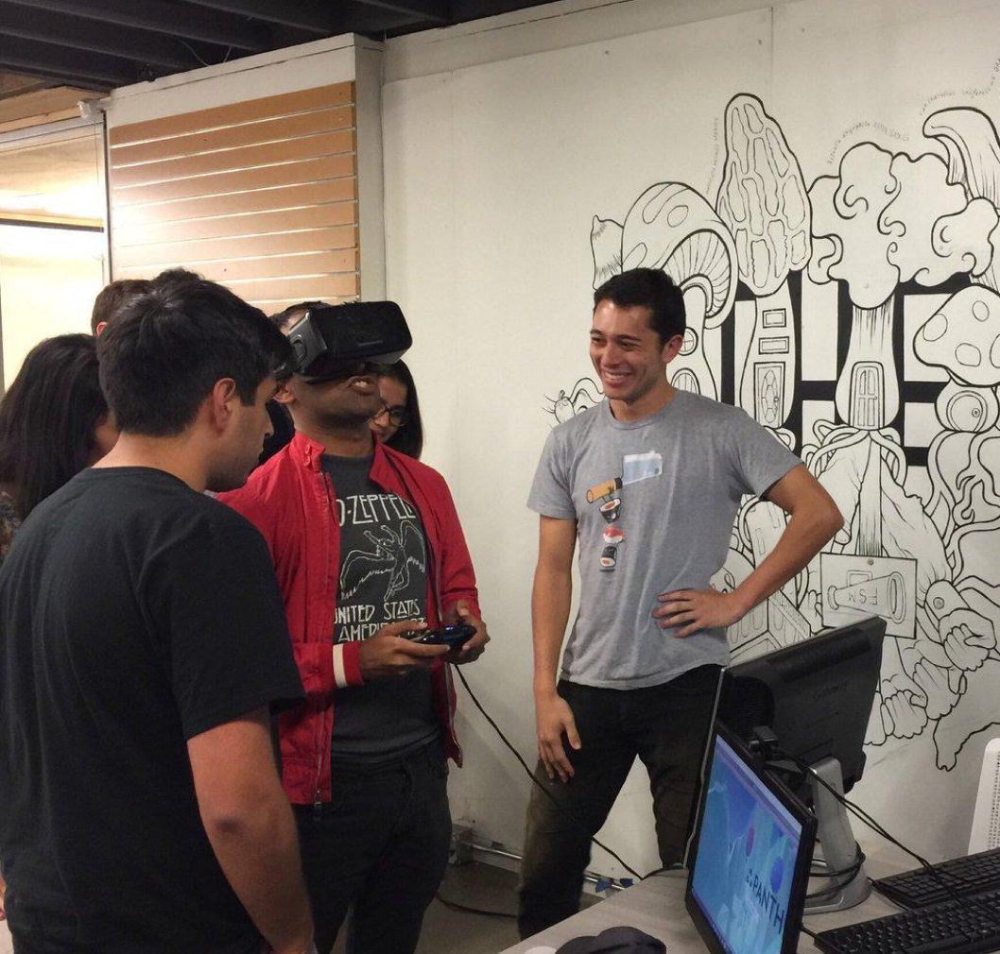
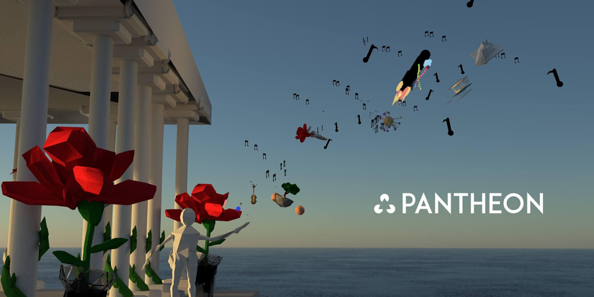
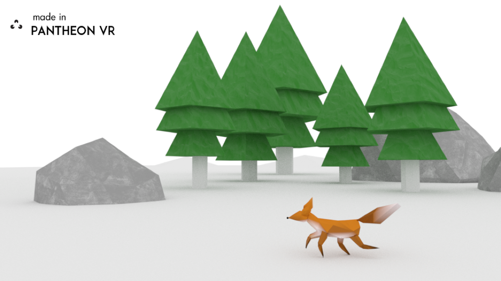
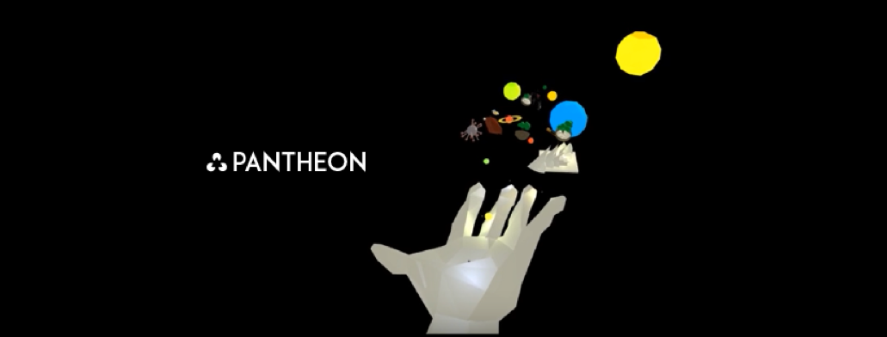

|
PantheonVR was a side project that my friend and I hacked on as college students, until it unintentionally blossomed into a full blown 3D modeling set for VR. We would eventually take the product to YCombinator and get funding in the winter of 2017.
When I was a sophomore in college, My friend and I were sitting around one day talking. "Dude, imagine learning about biology by flying through the brain, or swimming through the bloodstream! How cool would that be!!!" He scoffed at me, then looked me dead in the eyes, and said "OK. Why don't you build it then?" Never one to turn down a challenge, I spent the next three months learning Blender and Unity3D so we could create a biology-learning VR experience.
|
|
I modeled everything in Blender3D, and my friend programmed simple interactions in Unity3D. We recorded some scenes from the DK2 on my terrible graphic card.
VR Plant TissueWe quickly realized that we needed an interaction paradigm, and that just passively viewing models in VR was just scratching the surface of what this technology could do. So we went back to the drawing board, and rethought the application. In these days before Oculus Touch controllers, we ended up slapping a leap motion on the front of our DK2, and designed an application where you could interact with eukaryotic cells in VR.

|
While the application was compelling, going through the process of building this app we stumbled on a more interesting problem. Making stuff in VR is hard.
Over the course of this cell project, we had realized that the entire pipeline to create these models and interactive experiences was incredibly complicated and had a steep learning curve. We had to 3D model everything in Blender, texture these models in Quixel and Photoshop, and then finally port it to Unity3D, where we would have to program interactions and create shaders for our models.
Hammad and I spent the next couple weeks splitting our time between playing basketball and just musing about how to solve this. After enough conversations, we realized that theoretically it would be possible to compress the entire VR creation pipeline into a single standalone application, where a user could 3D model, texture, and animate without leaving VR. So we set out to make that.
Hammad handled the bulk of the engineering work, while I would handle design and other assorted engineering tasks. In my spare time I would start to devour design, business, and engineering books and posts. The Design of Everyday Things would become my bible, and Paul Graham's essays my hymns.
We decided to create a head based interface for our 3D modeling application, (this was before the days of the Oculus touch, and the leap motion was as poorly supported as it is today.) We also reasoned with a simple head based interface, we could easily extend our application to mobile VR as it started to diffuse to consumers.
I designed our menu and interface. After making a bunch of failed 3D interface ideas, I decided to rip the idea of 2D clickable icons from the iPhone home screen design. I was shocked at how well it worked, but it makes sense knowing what I do now. It turns out that all great “intuitive” actions are built from the mental models inside of peoples heads that already exist. Designs from iOS or web paradigms have become so ubiquitous that just designing interfaces like what already exists can save hours of onboarding and user errors.
The iteration of the UI before our launch ended up looking like this. I’m happy with the design paradigm I chose, it was almost infinitely extensible, and seemed intuitive.
Looking back, I think I did many things right as far as the UI went. The design was friendly, and happy. With simple colors, and a welcoming font. I ran about 100 people through in usability tests, and it passed most of them. Given what I knew at the time, I’m happy with how it turned out.
|  |
The interactions of scaling, rotating, and moving, on the other hand, were a disaster. I kept the gaze based interaction paradigm, so you basically had to violently turn your head to rotate and scale objects. While people said it was “intuitive” after a while, the sheer pain of up and down motion using a head based interface simply made this an infeasible interaction. If I was going to go back and redesign these, I would stick with a joystick based interaction.
|  |
One day, at the incubator we were working at, there was this posting for office hours with some Venture Capital firm called “YCombinator”. I didn’t think too much of it, as I had no idea what YCombinator was. I mentioned at lunch to my friend and he spit out his Chipotle.
“DUDE. WHAT?! YOU'VE BEEN READING HACKERNEWS FOR THREE YEARS HOW DO YOU NOT KNOW WHAT THAT IS”.
So after he laughed at me for a little, we applied to the office hours with Qasar Yoonis, the COO of YCombinator. We showed pantheon to Qasar. It seemed he loved it, singing the Star Wars theme song as he flew around in circles.|

|
Before applying to YC, the team, now of four, met for a weekend straight and we refined our vision of this very jenky VR 3D modeling tool. The vision was to move past 3D modeling and seek to democratize VR content creation. With this tool, we would allow anyone to create immersive worlds and tell stories that needed to be told. We applied with this vision and were accepted to the winter class of 2017.

|
YCombinator did work to accelerate our product development process, and my responsiblities centered on building our product vision. I would continue to prototype interactions, and build expansive sprawling scenes to show the power of both VR and our modeling application.
As a 20 year old, I did my best to communicate the promise of a tool that could express the human imagination.
|  |
|  |
|  |
Although I was pretty proud of the work I was doing, the story ends here. After released the project onto the Oculus store, we finally began to realize that the market for VR had been grossly overestimated and overhyped by independent analysts, Oculus Marketing, and Vive. I met with Hammad and told him we were too early. He agreed, but thought we should keep pushing ahead anyway. I was heartbroken. I had just put in a year of my life into this thing that I knew simply wouldn't work.
After a couple more weeks, I had had enough, so I left PantheonVR and returned to UC Berkeley to finish my CS degree. After a couple more months, Hammad, Sonia and Neha would pivot to AR content creation, and would be acqui-hired by Ubiquity6 a year later.
I think a lot about this first big failure of mine. I still wonder if we had made the right product decisions that this would have worked. But the truth is, I don't think that mattered. Like most failed products, our only sin was being too early. I think the vision was solid though: 3D modeling in VR makes perfect sense, and while input methods still have to evolve to be as precise as a mouse and keyboard, there's a world of potential. Something that I think we stumbled upon that is still untapped though, is the idea of the user generated explorable world. There was something incredibly compelling about flying around virtual worlds that seemed so similar to the texture of thoughts. Lastly, PantheonVR did serve as a powerful VR prototyping tool, and the many things I made while creating marketing materials still influences my work today.
Since I left Pantheon, I read dozens of books about business and companies. It's just a fact of life that a products road to success is paved with other's failures. A month after PantheonVR was released, Oculus Medium was also released to great critical reception. A year later, Google Blocks came out, and the related low-poly Google model ecosystem launched as well. Facebook Horizons seems to be in a similar vein as our original vision, but we'll see what that looks like when it premieres.